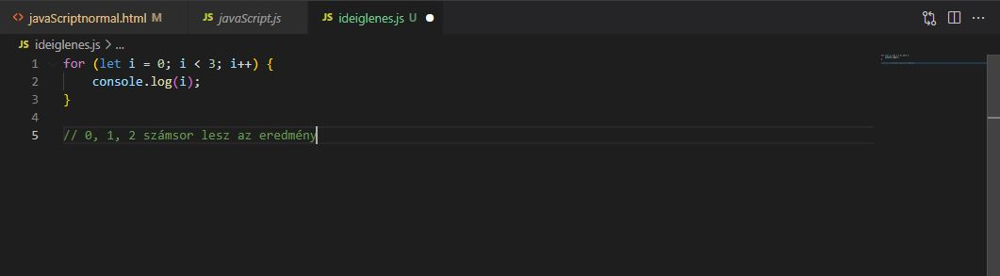

A javaScript program flow-ja
A javaScriptben a programok föntről lefele futnak, de ezt nem mindig így akarjuk. Van, hogy arra van szükség, hogy extra kódok legyenek benne, néha pedig ki is akarunk zárni párat, loopolni, vagy ismételni.
Itt az "if ... else ... " jön szóba, vagy a "truthy and falsy kifejezések" (igaz és hamis kifejezések), a "Comparing === to ==" (összehasonlítás), a ternary operator (terner operátor), block scope, amiről már volt szó, illetve a Loops: for, while, do...while (hurkok).
Ezek az kulcsszavak (keyword), végrehajtják azt, amit belerakunk a {} közé, akár egy soros, akár több.
If
Ahogy a nevében is benne van, feltételekkel dolgozhatunk benne. A Boolean-en alapszik, tehát az igaz (true) és a hamis (false) eredmények születhetnek. De persze példázva ez is könnyebb.
Érdemes ennél a résznél ránézni az Operátorokra (operators), amik itt vannak:

Persze lehet bonyolítani a dolgokat, meg lehet azt is nézni, hogy betűkkel (string) mit operál.

A végére egy bonyolultat:

Ennél a résznél érdemes kitérést tenni arra, hogy mi is számít hamisnak (false) és igaznak (true).
| falsy | truthy |
|---|---|
| 0 | Everything NOT falsy (minden, ami nem false) |
| "" vagy '' (empity string) | true |
| null | 0.5 |
| undefined | "0" |
| NaN |
If ... else
Azt is meg kell adnunk a programsornak, hogy mi van akkor, ha az if hamis (false). Erre való az else (egyébként).
Persze, mint minden normális esetben, most is Tolkien segítségét kerjük a dolgok megértésében.

De lehet olyan dolog, amikor a feltétel nem teljesül, így van egy "else" is.
Még egy utolsó példa, ahol már értékek (value) sincs megadva a változóknak (variable). Csak az számít, hogy a zárójelben true, vagy false érték van-e. Fontos észrevenni, hogy itt már csak egy egyetlen egyenlőség jel van.
Ternary operator (feltételezés)
Lehet a magyar megfelelője nem a legjobb, de talán érthető. A lényeg, hogy rövidíti az "if"-et. Persze itt is a példa segít talán a legtöbbet.
Loop with for()
Néha arra van szükség, hogy néhány kód ismétlődjön. Itt is a példa a legcélravezetőbb.
A „for” keyword zárójelében van egy statement (utasítás), ami annyit mond, hogy az „i” egyenlő 0-val. Ez hajtódik először végre. Ezek után jön egy condition (feltétel), ami annyit csinál, hogy megnézi, hogy az „i” kisebb-e, mint 5, ha igen, akkor true (igaz) lesz az állítás. Ezek után a {}-ban dolgok történnek meg, majd ha az állítás, miszerint az „i” még mindig kisebb, mint 5, akkor vége is van, ha nem, akkor visszaugrik az „i++”-ra, ami hozzáad egyet az „i”-hez. Az „i” amúgy hagyományosan a loop-okhoz szokták kötni, mint változó (variable).